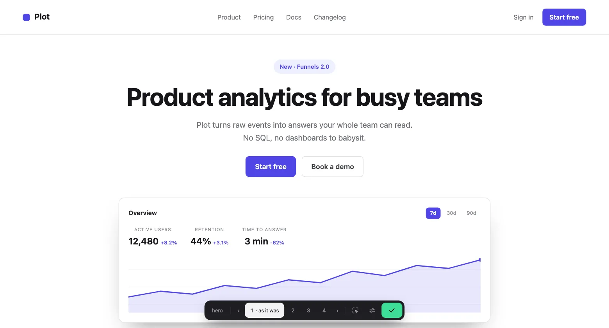
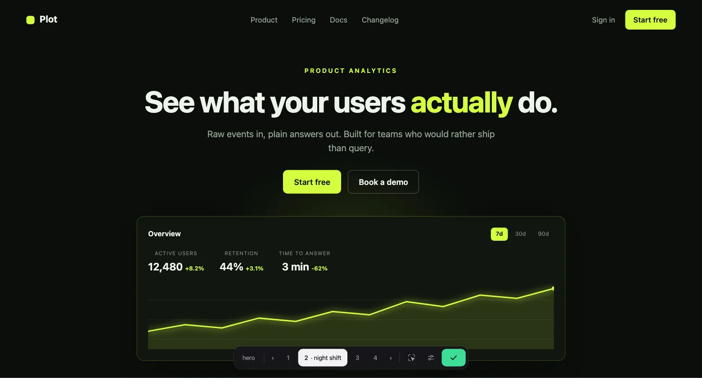
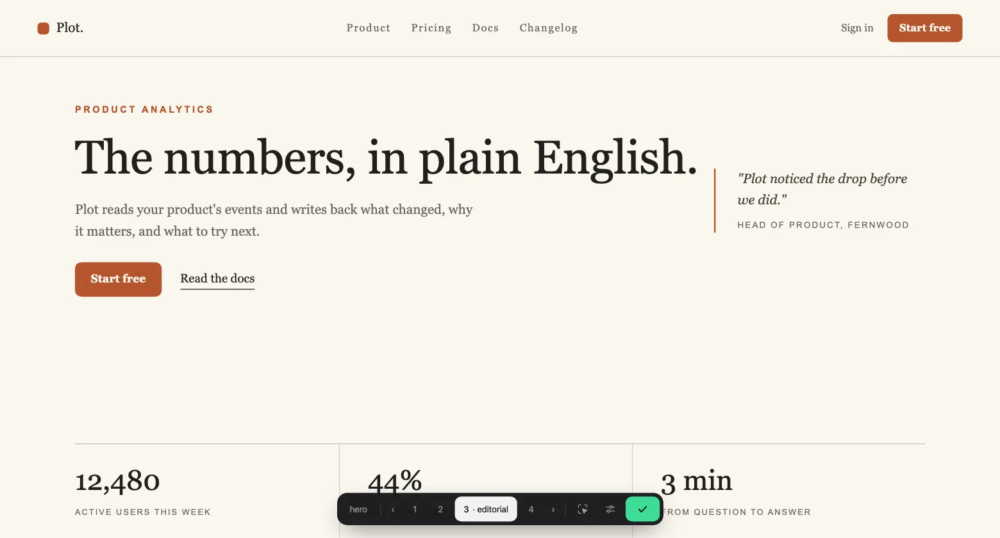
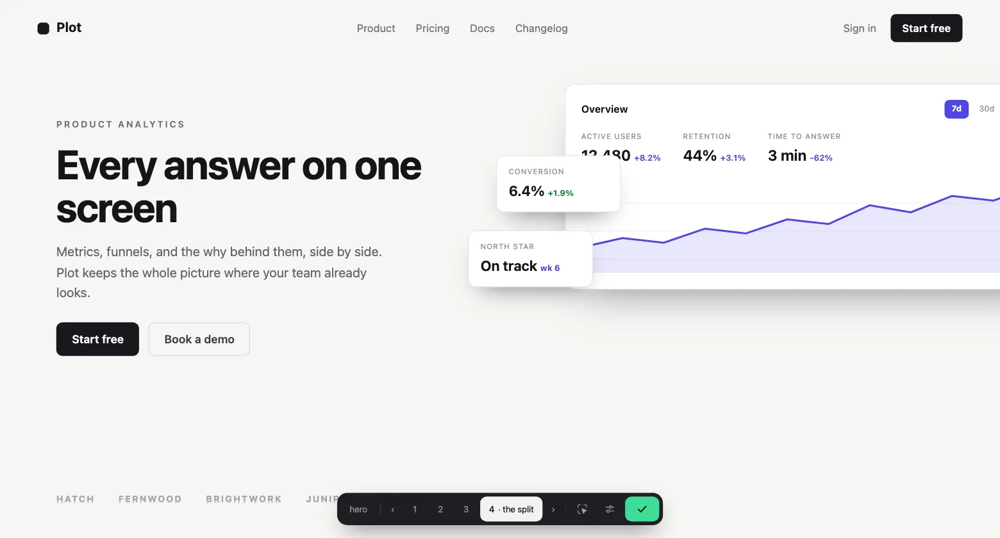
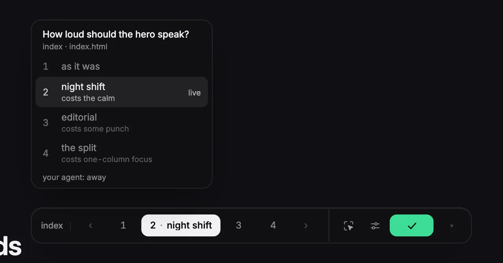
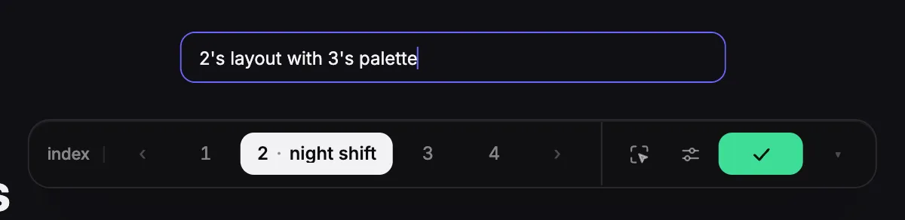
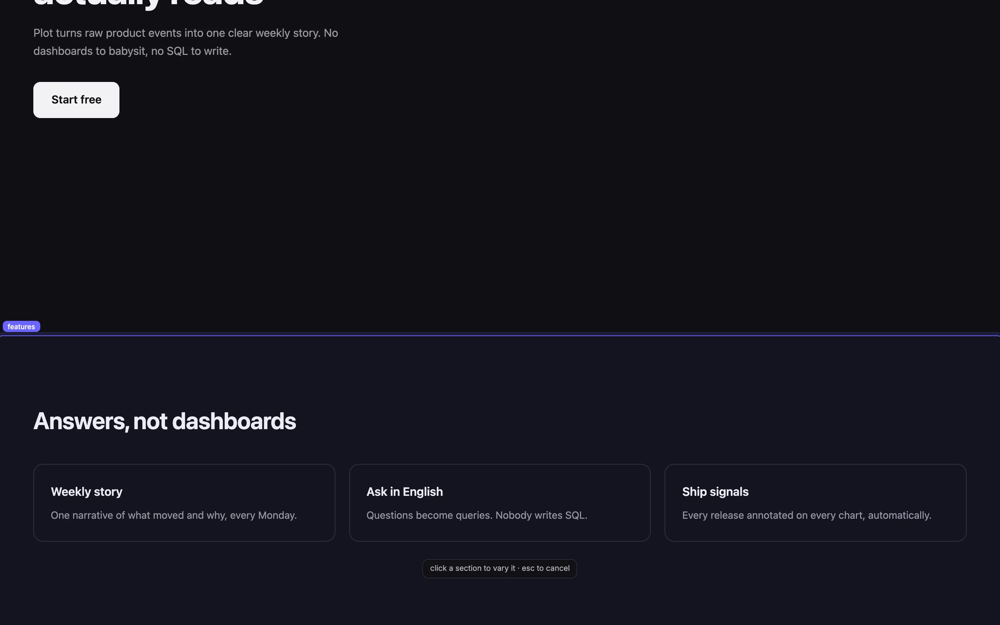

Four real versions of one file, on the localhost you are already looking at. Your agent writes them. Arrow keys flip them. The one you keep is the code.




That is the whole loop.
/variate four takes on the hero
Four real versions of that one file. Your stack, your design tokens, your words. Nothing gets added to your project.
←→ and the page really changes. Each version has a name and names its tradeoff, so you know what you are giving up before you choose.

Say calmer. Or mix them: 2's layout with 3's palette. Each part comes whole from one version, never averaged into mush.
What you turn down is remembered. Dead ideas stay dead.

enter or the green check, and that version is your file. The others are gone. git diff shows the design you chose and nothing else.
Click any part of your page to start the next round there. The card tells your agent exactly what you clicked (the section, its heading, the route it lives on), so the ask lands on the right file. Sidebars, headers, and icon rows included.

Then ask your agent for four takes.
Works with Claude Code, Codex CLI, opencode, and Cursor. Everything stays on 127.0.0.1: no accounts, no telemetry, no network calls.